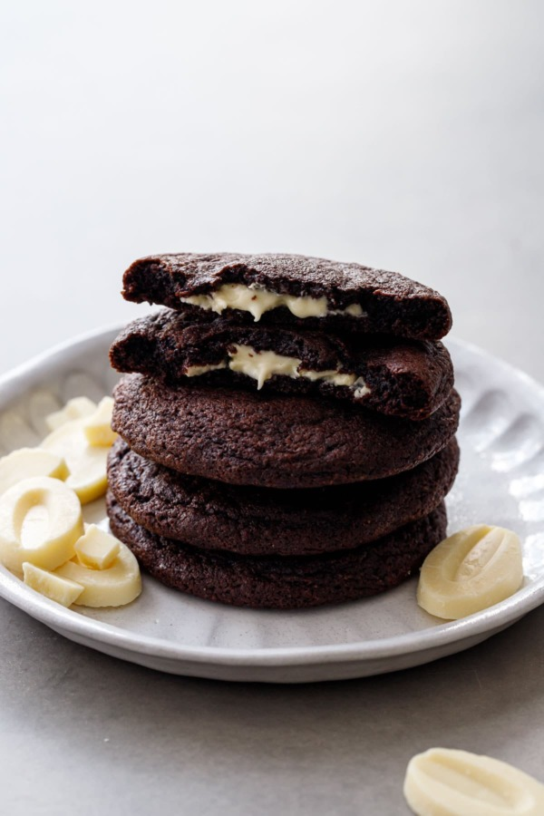

מתכון לעוגיות אמסטרדם
מתכון לעוגיות אמסטרדם נפלאות, מושלם לכל אירוע.

דרישות מראש
- 💡רמת ניסיון: מתחיל
- ⏲הכנה: 20 דקות
- ⏲זמן בישול: 12 דקות
- ⏲סה"כ זמן: 32 דקות
- 👥מספר מנות: 24 עוגיות
מצרכים
- 1 כוס (226 גרם) חמאה לא ממותקת, רכה
- 1 כוס (200 גרם) סוכר לבן
- 1 כוס (220 גרם) סוכר חום
- 2 ביצים גדולות
- כפית תמצית וניל
- 3 כוסות (375 גרם) קמח לבן
- כפית אבקת סודה לשתיה
- חצי כפית מלח
- 2 כוסות (340 גרם) שברי שוקולד
- כוס (120 גרם) אגוזי קקאו מגוררים (אופציונלי)
הוראות הכנה
- חממו תנור ל- 375°F (190°C). הכינו תבניות אפייה עם נייר אפייה טפלון או מסיליקון.
- בקערה גדולה, הקרימו יחד את החמאה, הסוכר הלבן והסוכר החום עד שהכל יהיה קרמי ואוורירי.
- הוסיפו את הביצים אחת אחרי השנייה, ואז הוסיפו את תמצית הווניל.
- בקערה נפרדת, תערבלו יחד את הקמח, אבקת הסודה והמלח. הוסיפו בהדרגה את המרכיבים היבשים למרכיבים הרטובים, וערבו עד לשילוב מושלם.
- הוסיפו את שברי השוקולד ואגוזי הקקאו המגוררים, אם בחרתם להשתמש בהם.
- תשפכו כף של בצק עוגיות על הנייר האפייה, במרחק של 2 אינץ' אחד מהשני.
- אפו בתנור המחומם מראש למשך 10-12 דקות, או עד שקצוות העוגיות יהיו קלות בצבע זהב עץ.
- תנו לעוגיות להתקרר על תבניות האפייה מספר דקות לפני שתעבירו אותם לרשתות קירור כדי שיתקררו לגמרי.
- תיהנו מעוגיות אמסטרדם הטעימות שלכם!
סרטון